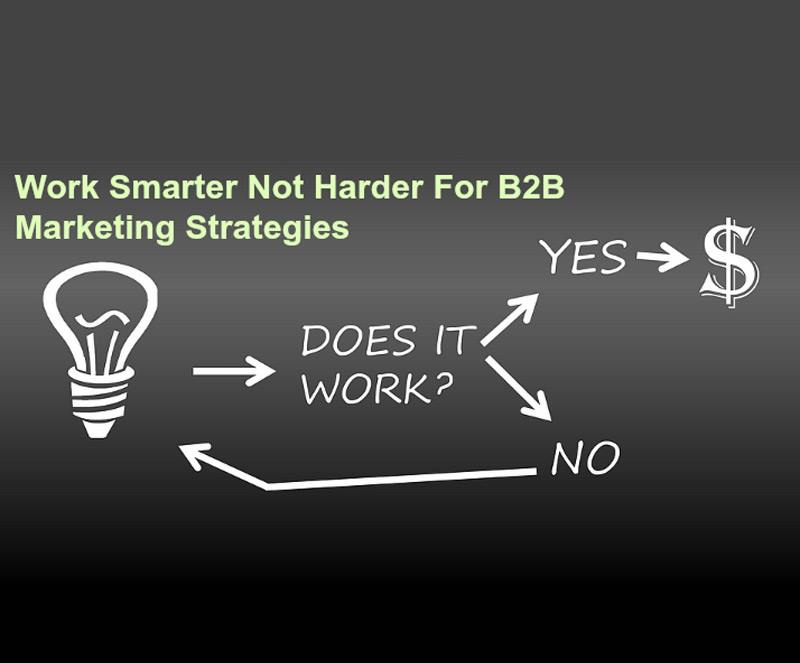

Blog //
Work Smarter not harder for B2B Marketing Strategies
Let’s be honest with each other: lead generation is not easy. Many companies feel like it’s an endless struggle to generate quality leads; you’re not reaching the right people, your sales and marketing teams are frustrated with one another, you’re using digital marketing strategies but they’re not working. This is exhausting! So what can you do about it? Following B2B lead generation strategies can help you to work smarter - not harder.

- Strategy Before Tactics Take a breath. We know you want to jump right into using all those digital marketing tricks and tips you’ve heard so much about, but diving in headfirst is not in your best interest. Before you start using all those new marketing tactics, you must figure out how they fit into your overall strategy. So what do you need to do first?
- Start With Smarketing We can hear you shouting - “That’s a made up word!” And yes, it is. But it’s a very special made up word. Smarketing is what you get when you combine Sales and Marketing. Sales is frustrated with Marketing because they’re not providing high quality leads - how are they supposed to close deals with the wrong customers? Marketing is frustrated with Sales - they worked hard to get those leads, why aren’t they closing? It’s far past time to close the gap. Stop thinking about Sales and Marketing as two different teams. You all work together, and it’s time that was reflected in your strategy. Combine Sales and Marketing to create your Smarketing team. Have them interview one another. How many leads does Marketing need to generate in order to Sales to close the number of deals they need to meet revenue targets? This will help your team to set SMART goals together. What common objections do leads give to the Sales team? Are there resources that Marketing can provide to Sales that will help them answer those objections? Keeping the lines of communication open across teams will help them to function better together and combat issues as they arise - rather than simply playing the blame game.
-
Take it Persona(l)
Every effective B2B lead generation strategy should start with your persona. Who is it that you’re trying to reach? Take the time to understand key factors about your personas, including:
Think about and interview your existing clients who represent your ideal lead. And keep your Sales team in the loop; they can provide a wealth of knowledge on your leads who fit the bill for your target persona. Ask them why deals do and don't pan out, what concerns leads typically bring up, questions that frequently come up during meetings, etc. Include these key nuggets of information in your persona document.
- Who is the buyer?
- What are their key pain points and challenges?
- How does your business address those issues and solve your persona’s problems?
- Set Some Goals Any strategy must have goals - otherwise how can you know if you’re making progress? Take the time to set SMART goals. These are goals that are Specific, Measurable, Attainable, Relevant, and Timely. They should be based on research: what have you been able to accomplish in the past? What can you reasonably expect to do in the future? These should be set by your Smartketing team: Sales and Marketing must be able to agree on goals in order to work together to accomplish them.
- Smarter B2B Lead Generation Strategies Okay. So now you know who you’re targeting and what your goals are - and your Smarketing team is aligned and ready to generate leads. It’s time to get into tactics. Remember that the tactics you use will be based on your needs. Not every company will use the same marketing strategies; think about what will work for you and include it in your documented strategy. Here are some strategies that we often suggest.
- Content is Still King And it’s not going anywhere. Content is a powerful vehicle that allows you to educate leads on their problems and potential solutions - and persuade them to consider your solution. Keep in mind that content doesn’t have to mean blog. Yes, blogs are an excellent lead generation strategy, but they’re not the only type of content out there. Make it easy for leads to request an offer by setting up a landing page with a form they can fill out. They provide you with their contact information in exchange for the content, which allows you to continue sending them relevant content until they’re ready to buy. This also makes it easier for Sales to contact them offline, because they’ll know what actions the lead has already taken.
- Improve Your Site’s Conversion Rate While the phone line is only open during regular business hours, your website can greet and assist your leads 24/7. Keep in mind that your buyers are busy, just like you. They need to understand your company's value proposition quickly and easily. Keep an eye on your site's bounce rate, and install monitoring tools like HotJar to find out where your site visitors are getting stuck or dropping off.
- Video Marketing Videos are considerably more likely to be perceived as an important content than articles – regardless of how well-written it is. Consequently, gating videos is a reasonable way of collecting contact the data of your potential clients. It gives organizations a great deal of flexibility and creative freedom. After you’ve piqued their enthusiasm for content that leads up to this video, you gate the access to it. It will both create leads and let you check what number of watchers will give you their contacts. It is a useful method for assessing the quality of your best of channel content. The simplest approach to gate a video is to incorporate a subscription form offering to send a link to it. The advantage of this approach is that you don’t just know how many people are watching your content and how many times. You gain access to individual watching history which helps personalization.
- Nurture Leads With Email Marketing Emails are great because they can hand-deliver timely messages to your leads throughout the decision-making process. Segment your email lists by criteria such as actions they’ve taken, demographics, or company position so you know you’re sending the right email to the right person at the right time. But whatever you do, don’t send batch-and-blast emails to all of your contacts; you’ll lose trust with them and many will unsubscribe - or worse, mark you as spam.
- Temper Your Online Efforts With Offline Efforts Many building materials manufacturers really shine in face-to-face interactions - so use that to your advantage! Go to trade shows, industry events, conferences, and networking events to meet people, then continue the conversation online. Send them follow-up emails, connect with them on LinkedIn, and invite them to subscribe to your blog. When you keep the conversation going, you keep your business top of mind.
- B2B Lead Generation Starts With Strategy Let’s go back to real talk. A lot of company have tried many of these B2B lead generation strategies and had no success. Why? They skip (or rush) that essential strategy phase. There’s a reason we included it at the top of this page: it’s vital. Building a strategy takes time and must be implemented with care - these tactics are great but they’re not instant fixes. Start with strategy. Figure out who you’re marketing to and what your goals are, and it will be easier to decide which tactics will help you get there. Need help? Let VSynergize helps you in creating a solid strategy based on research and data. Call us today on 855-203-8196 or email us at info@vsynergize.com.